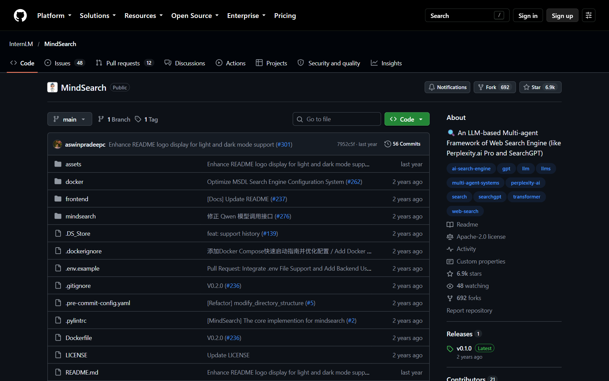
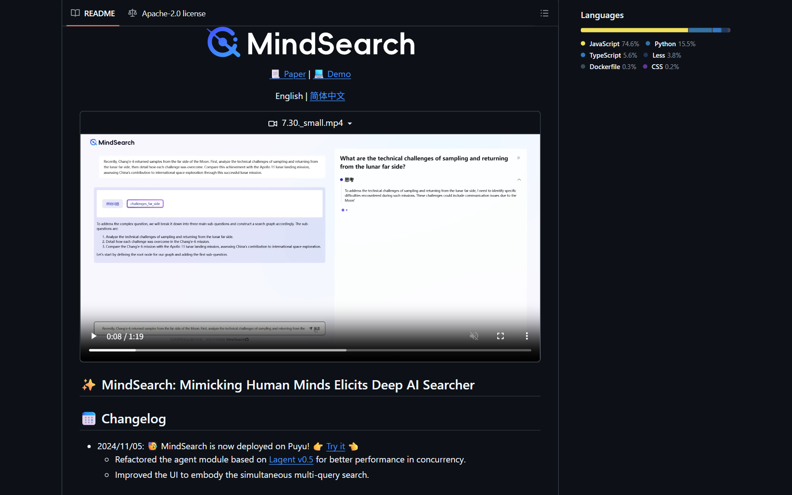
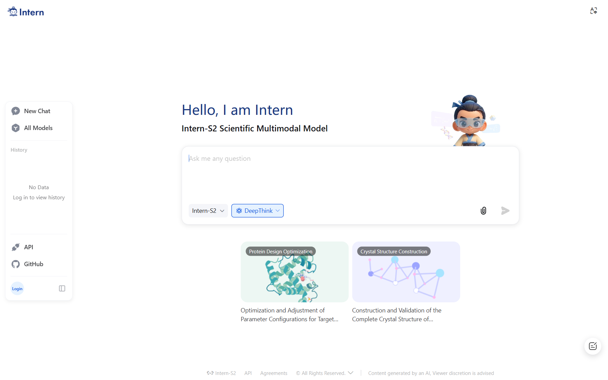
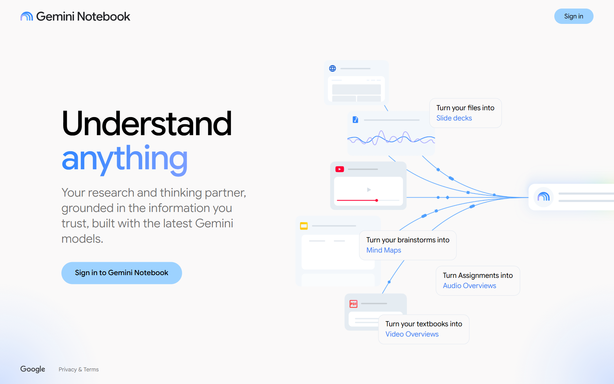
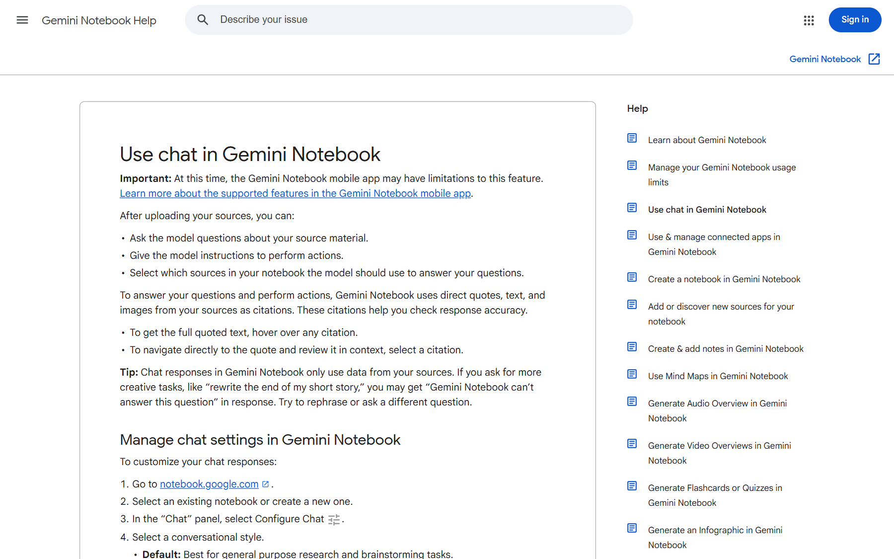
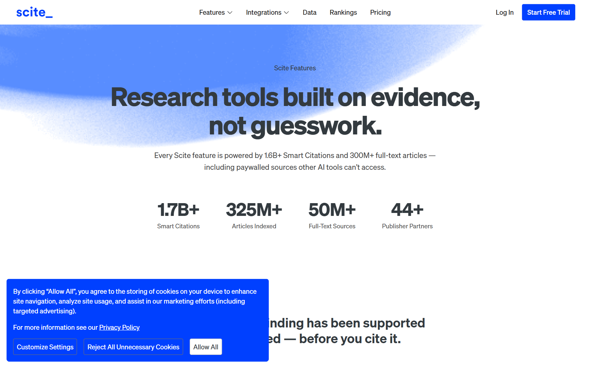
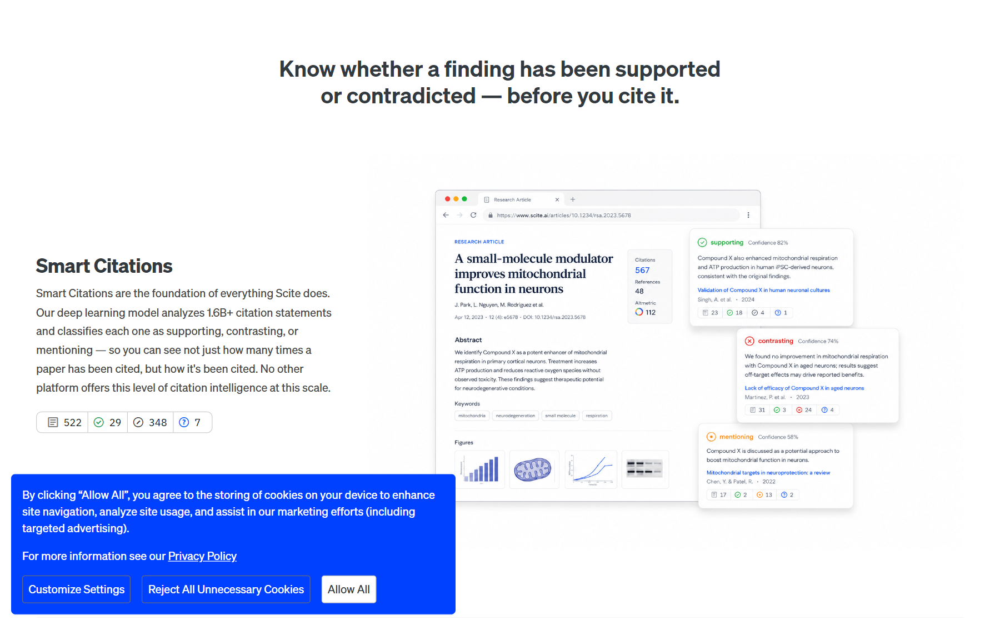
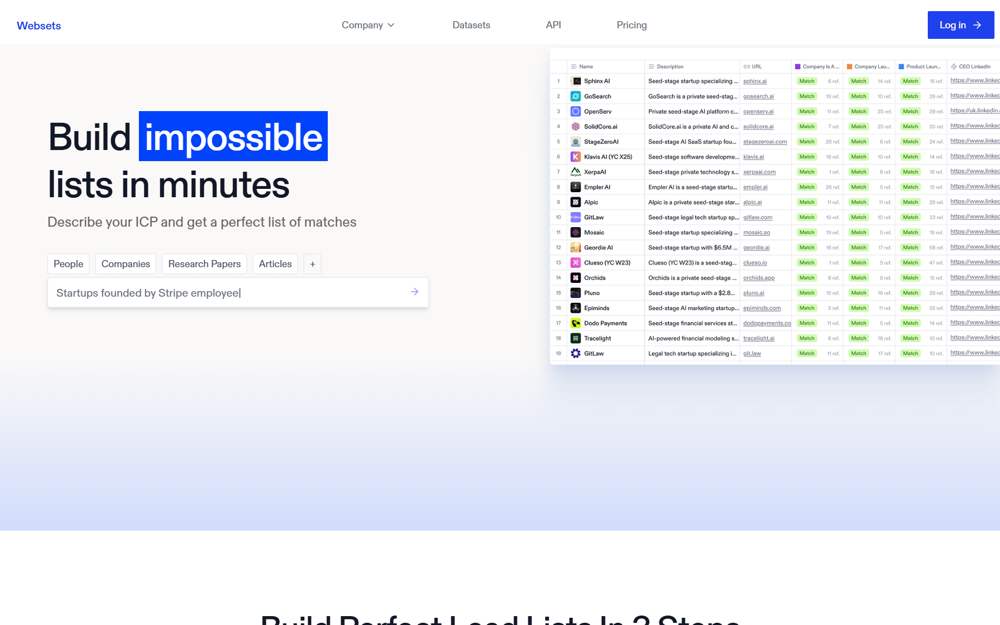

MindSearch
GitHub ↗


Gemini Deep Research
官方文章 ↗Perplexity Deep Research
官方页 ↗NotebookLM / Gemini Notebook
产品入口 ↗

Scite
Features ↗

Exa Websets
入口 ↗
说明：Perplexity 实时页被 Cloudflare 拦截，截图为官方页面的 Wayback 快照；MindSearch 在线入口已变为通用 Intern 对话；Websets 当前首页是 lead-gen 列表，旧的研究表格界面未公开。其余为实时页面截图。